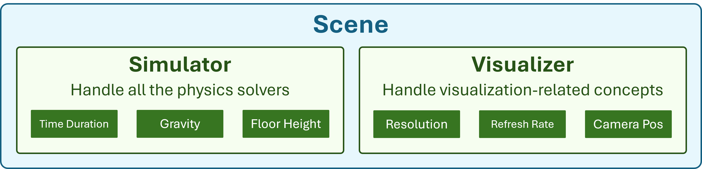
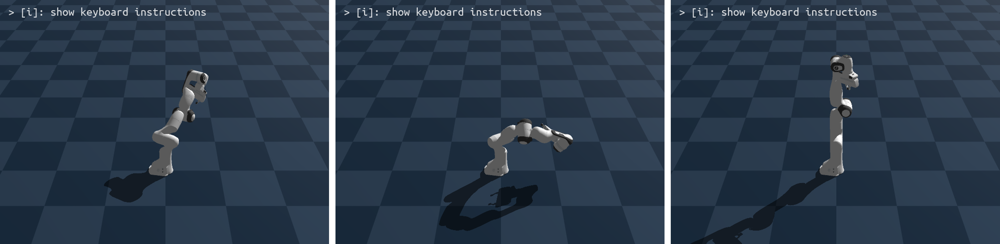
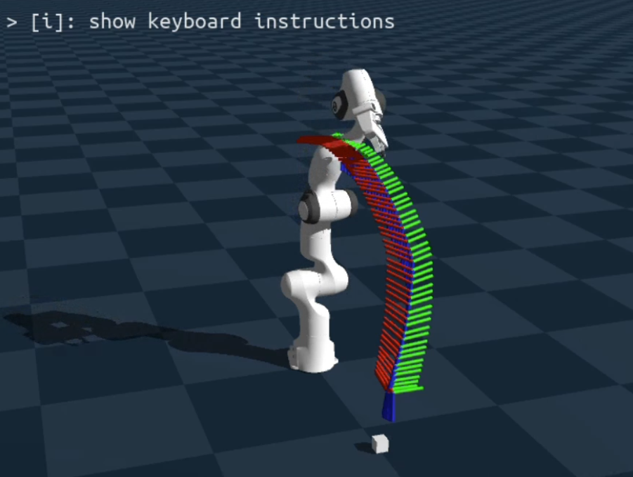

Physics Simulation
Get started with Genesis, a high-performance physics engine with native AMD GPU support. Load robots into simulated scenes, apply PD controllers, perform pick-and-place with Inverse Kinematics, and scale to hundreds of parallel environments for reinforcement learning.




Goals
- Set up and run physics simulations with the Genesis engine
- Load and control robotic manipulators in simulated environments
- Apply PD controllers and motion planning with Inverse Kinematics
- Scale simulations to hundreds of parallel environments for RL workflows
Genesis Labs (PhySim01 to PhySim04)
What this section covers
Progressive introduction to physics simulation, robot control, and parallel environments.
PhySim01 — Hello Genesis
Introduction to the Genesis physics engine — set up a scene and run your first simulation.
PhySim02 — Control Your Robot
Load a Franka Emika Panda robot and apply PD controllers to manipulate joints.
PhySim03 — Motion Planning
Perform pick-and-place tasks using Inverse Kinematics and motion planning.
PhySim04 — Parallel Simulation
Scale to hundreds of parallel environments for reinforcement learning experiments.
Explore the other teaching labs: Computer Vision, Deep Learning, LLM from Scratch.